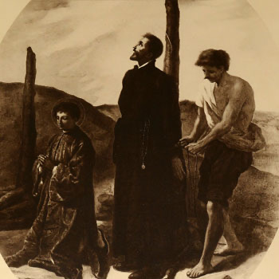

Isusovački blaženici
Svećenik
Bl. Mihael Carvalho
1579. – 1624.
Portugalski isusovac nakon dugoga čekanja stigao je u Japan, služio tamošnjim kršćanima u tajnosti te nakon trinaest mjeseci zatvora bio spaljen s drugovima.
Tekst je preveden i prilagođen uz pomoć umjetne inteligencije.

Izvor slike
- Spomendan
- 6. veljače
- Zaštitništvo
- Nije navedeno u izvoru
- Životni vijek
- 1579. – 1624.
- Djelovanje
- Misije i evangelizacija · Obrazovanje i poučavanje vjere · Progoni i progonstvo · Mučeništvo
- Razdoblje
- 16., 17. stoljeće
- Svećenička služba
- Profesor teologije u Goi
- Dolazak u Japan
- 1621.
- Rođenje — dostupni podaci
- 1579.; dan i mjesec nisu potvrđeni u provjerenom izvoru.
- Mjesto rođenja
- Portugal
- Datum smrti
- 25.08.1624.
- Mjesto smrti/mučeništva
- Ōmura, Japan
- Okolnosti smrti/mučeništva
- Spaljen na lomači zajedno s drugim misionarima i katehetom, za progona kršćana.
- Uloga
- Svećenik
- Mučenik
- Da
- Ostale oznake
- Misionar u Goi i Japanu; profesor teologije
- Pripadnost
- Isusovac
- Drugi oblici imena
- Miguel Carvalho · Miguel
Životopis
Miguel Carvalho rođen je 1579. u Portugalu. U Goi je završio studije i primio svećenički red, a zatim deset godina predavao teologiju. Željeni put u Japan započeo je 1619. Nakon brodoloma kod Malacce, preko Macaa i Manile stigao je 1621. u Nagasaki, prerušen u portugalskoga vojnika. Dvije je godine na obližnjem otoku učio japanski.
Kad je otvoreno objavio nakanu naviještanja vjere, protjeran je s otoka. Poglavar ga je poslao kršćanima u Ōmuri. Na povratku u Nagasaki prokazao ga je doušnik. Slijedilo je trinaest mjeseci zatočenja na otvorenom, zajedno s jednim dominikancem, dvojicom franjevaca i katehistom.
Zajednički okvir njihova zatočenja bila je zabrana kršćanskih misija nakon 1614. Campbell bilježi povratke misionara pod krinkom trgovaca i vojnika, kao i skučenost zatvorskih prostora izloženih vremenskim nepogodama. Carvalho je pripadao tom naraštaju povratnika; njegov vlastiti životopis potvrđuje i brodolom, jezičnu pripravu te novu službu nakon izgona s otoka.
Dana 25. kolovoza 1624. zatočenici su spaljeni polaganom vatrom. Tijekom gotovo dvosatnoga umiranja Carvalho je svjedočio da prihvaćaju smrt zbog vjere u Krista.
Tekst je preveden i prilagođen uz pomoć umjetne inteligencije.
Pročitaj više na izvornoj stranici ↗